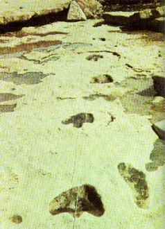

| e-mail - August 2000 |
| by Do-While Jones |
We received this e-mail shortly after mailing our June newsletter. We wanted to share it with you in the July newsletter, but there wasn't enough space.
|
Dear friends, I just finished reading my June newsletter with the article about the Paluxy tracks in our state park. I, too, have been to Dinosaur State Park on more than one occasion and failed to find anything resembling human tracks. However, there apparently used to be soome there. (See attached photo from Reader's Digest.) |
 |
|---|
|
The caption says, "These tracks of a three-toed dinosaur and a man were photographed in 1971 at the Paluxy river. A flood in 1979 washed away the man track and eroded the dinosaur's trail." That's why we think it is important to divert the Paluxy river around the remaining tracks before they are all washed away. Apparently all those "man" tracks that you see on the creationists web sites are outside the park. I did go to the Creation Evidence Museum outside the park to look at the Taylor tracks. These tracks at this museum do appear to be human. Of course it is difficult to know for sure. The evolutionists typically say that these were made by an unknown five-toed dinosaur. And there is a lot of controversy even at ICR as to whether or not these are human. One sticking point is the claw-like toenails. There is a fairly new private dinosaur track site here in Texas near Canyon Lake that I have been to several times. There is a man-like print there that the previous owner encouraged me to put my bare foot into. I have to admit that my foot seemed to fit it very well. There does appear to be some opinions from the evolutionists that a lizard dragging its feet can make a human-like print. I personally would like to see some monitor lizard prints to compare with these known man-like prints. Thank you for all the good work that you are doing at Science Against Evolution. It is my personal opinion that all truth points to God. I wish that all scientists wanted the truth. Your fellow truth seeker, |
We made a follow-up visit in 2003.
| Quick links to | |
|---|---|
| Science Against Evolution Home Page |
Back issues of Disclosure (our newsletter) |
| Web Site of the Month |
Topical Index |